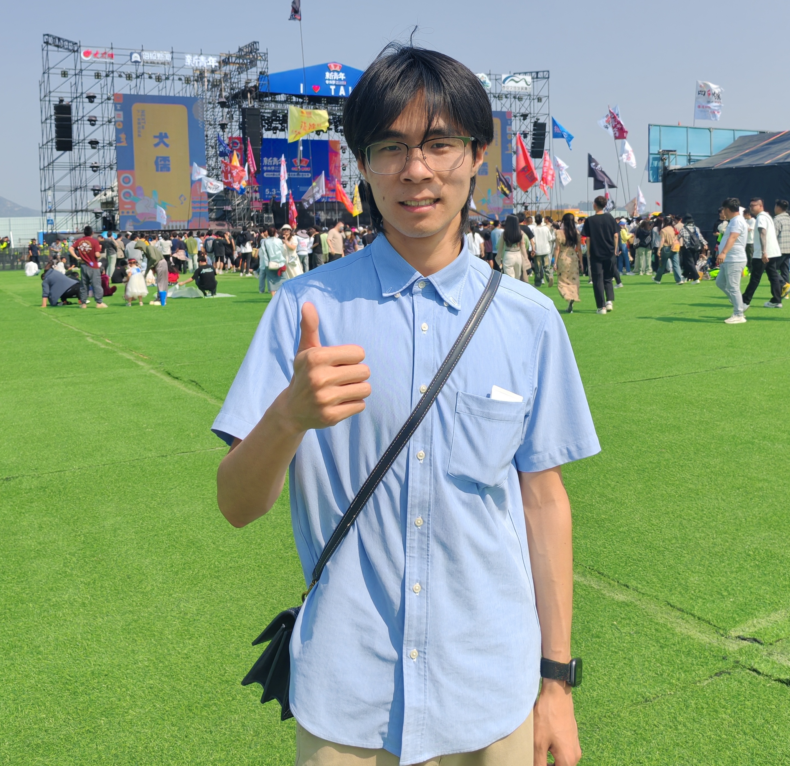

我是一名对人工智能和图像生成充满热情的研究者。目前在智谱AI实习，专注于图像生成模型的后训练优化工作，包括模型蒸馏、强化学习以及基础设施搭建。我致力于通过技术创新提升生成模型的性能和效率，推动图像生成领域的发展。 I am a passionate researcher in artificial intelligence and image generation. Currently working at Zhipu AI, I focus on post-training optimization for image generation models, including model distillation, reinforcement learning, and infrastructure development. My goal is to enhance the performance and efficiency of generative models through technical innovation, advancing the field of image generation.
专注图像生成模型的后训练优化工作。负责模型蒸馏与强化学习算法研发，提升模型性能和推理效率。同时参与基础设施搭建，包括训练pipeline优化、数据处理系统开发等，为模型研发提供高效稳定的技术支撑。 Focusing on post-training optimization for image generation models. Responsible for research and development of model distillation and reinforcement learning algorithms to enhance model performance and inference efficiency. Also participating in infrastructure construction, including training pipeline optimization and data processing system development, providing efficient and stable technical support for model research.
参与讯飞星火大模型应用开发，设计高效prompt工程策略提升模型输出质量，并负责前端交互界面开发，优化用户体验。 Participated in iFlytek Spark LLM application development, designed effective prompt engineering strategies to improve model output quality, and developed interactive front-end interfaces to enhance user experience.
作为研究生支教团成员，在贵州省丹寨县开展为期一年的支教服务。为贫困地区学生教授英语、音乐和信息技术课程，致力于缩小教育差距，帮助学生开拓视野。 As a member of the Graduate Volunteer Teaching Group, provided one-year teaching service in Danzhai, Guizhou Province. Taught English, music, and IT courses to underprivileged students, working to bridge the educational gap and broaden students' horizons.
WeChat: QuantumScope WeChat: QuantumScope